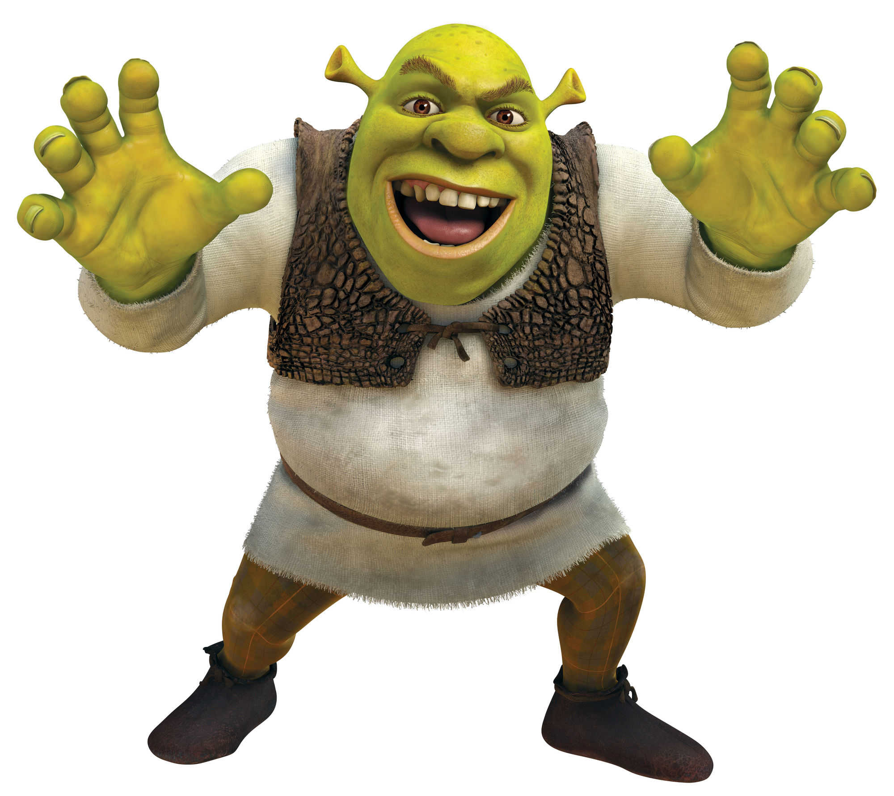

Tato decided to pray. He prayed and prayed. He prayed so hard that his excrement almost came out! When the sweet potatoes pulled out their guns, Tato heard a voice. "I WILL PROTECT THOSE WHO LIVES IN MY SWAAAAAMP!!!" It...was...GOD. He came down from swamp heaven and appeared right before the sweet potatoes' faces. "YOUR LIVES ARE ALL OGRE NOW.", says God. Then God shot out mud beams from his majestic hornlike ears and obliterated the sweet potatoes. Now the sweet potatoes are dead. Before returning to swamp heaven, God told Tato something, "Get your GED or I'll ban you from Roblox!" This struck fear into Tato's eyes for his passion for Roblox is never ending. As soon as God left, Tato rushed to get his GED. Years have passed and Tato recieved his GED and now owns a tech company called SPUD LYFE. His company became very succesful and Tato became very rich as a result, as rich as Bill Gates!
THE END!